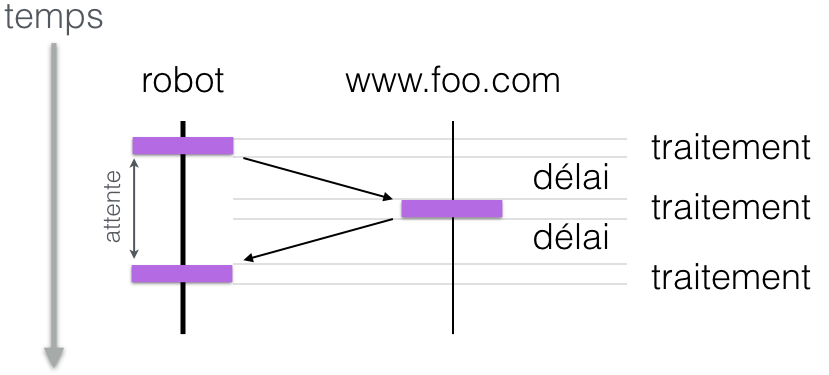
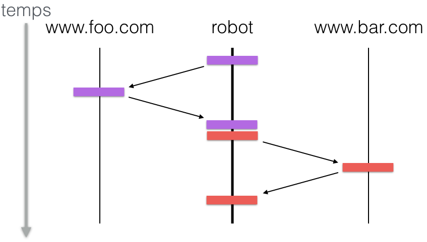
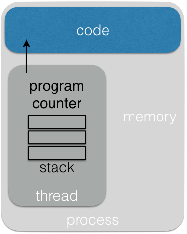
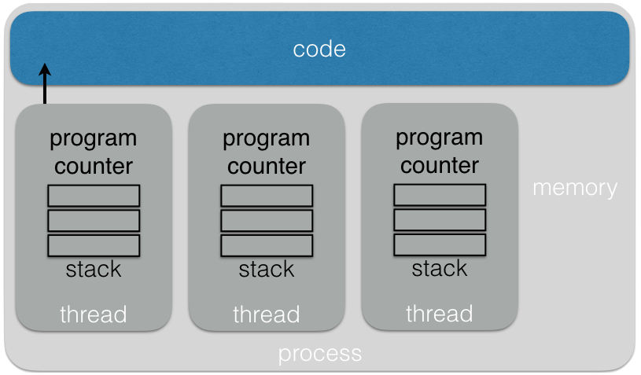
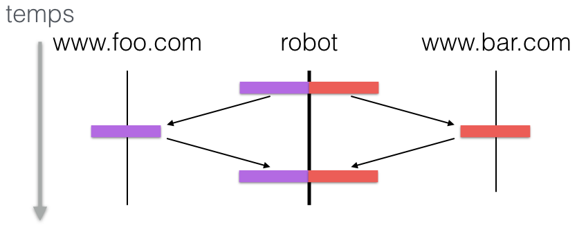
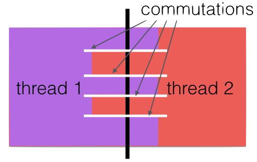
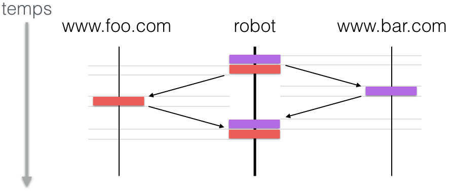

Licence CC BY-NC-NDThierry Parmentelat
programmation asynchrone¶
Cette semaine nous allons parler de programmation asynchrone. En effet depuis la version 3.5, Python contient une nouveauté assez intéressante pour traiter ce type de programmation, c’est la notion de coroutines, en conjonction avec librairie asyncio.
Dans cette première séquence nous allons essayer de comprendre ce qu’on veut dire par programmation asynchrone, et voir les différentes approches qu’on peut utiliser pour traiter ce genre de problèmes.
typologie d’applications¶
Pour commencer je vais introduire une distinction entre deux types d’applications informatiques. On distingue traditionnellement entre les programmes qui sont limités par le processeur, et ceux qui sont limités par les entrées sorties - en anglais on dirait CPU-intensive vs IO-intensive.
CPU-intensive
IO-intensive
Un programme qui va essayer de casser un mot de passe en essayant tous les mots d’un dictionnaire, ou une application de simulation météo qui passe son temps à dérouler des équations mathématiques, sont des exemples qui sont CPU-intensive. C’est ce type d’applications qu’on a envisagés dans les cours de Basile Marchand, ce n’est pas du tout la cible ici, on n’en parlera plus.
À l’inverse, une application qui irait lire systématiquement toutes les pages d’internet, comme le robot google, est une application IO-intensive, et c’est ce type d’applications qui est visé.
Contrairement à la première famille, on ne peut pas accélérer ce type d’applications en ajoutant des ressources CPU, car ce n’est pas ça le problème.
Si je reviens à mon robot, pour chaque page que l’on va chercher, notre programme commence par ouvrir une connexion TCP, puis crée une requête HTTP, bref sans rentrer dans les détails on peut schématiser ça comme ceci :
requête à un serveur¶

une suite d’aller-retours entre le robot et le serveur web. Ici le temps va de haut en bas: et chacune des deux colonnes représente l’occupation du CPU pour les deux machines en question, à gauche le robot, le client, et à droite le serveur qui lui fournit la page web. À cause du délai dans les transmissions et du temps de réponse du serveur, vous observez que le processeur qui héberge le robot n’est pas bien utilisé, il attend bêtement pendant la plus grosse partie du travail.
deux requêtes en séquence¶
Lorsqu’on a besoin de plusieurs pages, disons 2 pour commencer, voici ce qu’on obtient en contactant les deux serveurs de manière séquentielle. Le temps total correspond bien entendu à la somme des temps qu’il faut pour télécharger chaque page, et c’est très inefficace du point de vue de l’utilisation du processeur, qui reste largement sous-utilisé.
On a envie d’améliorer les performances de notre robot, et ceci à ressources constantes. On va voir que notre problème ici, c’est le modèle dit de programmation synchrone, je veux dire, le fait que notre client attende en bloquant, et c’est tout ce temps perdu à attendre qu’on va pouvoir mettre à profit.

processus simple¶
Avant de continuer, j’aimerais faire quelques rappels sur le fonctionnement des ordinateurs. Tout d’abord, il est bien évident qu’un ordinateur sait faire plusieurs choses à la fois, et notamment grâce à la notion de processus. C’est quoi un processus ? C’est une abstraction offerte par le système d’exploitation, pour justement faire tourner plusieurs programmes différents en même temps.
C’est une notion qui vise à fournir un maximum d’isolation : en simplifiant à l’extrême, un processus possède un espace mémoire qui lui est propre, ainsi que une pile (qui contient le contexte associé aux appels de fonctions), et un pointeur d’avancement (qui dit où on en est dans le programme).

avantages / inconvénients¶
parallèlisme
isolation
trop d’isolation
échelle : 10x - 100x - on ne peut pas s’amuser à créer les processus par milliers ou dizaines de milliers
threads¶
La notion de thread a été ajoutée par la suite, pour permettre justement d’avoir plusieurs traitements en parallèle, mais qui partagent un espace mémoire.
Ce qui fait qu’on peut voir un processus comme contenant un ou plusieurs threads, qui partagent le même espace mémoire.
Avec cette notion de threads, on peut penser avoir une bonne solution pour traiter notre classe de problèmes.

avantages / inconvénients¶
Par contre, les threads présentent un inconvénient majeur, qui rend leur utilisation très délicate.
disponible en python
utilisation très délicate
échelle 1000x - on peut en créer un peu plus que de processus, mais pas des dizaines de milliers non plus
commutations de contexte (1)¶
deux pages téléchargées par 2 threads différents¶
Dans le cas du robot qui télécharge les pages, on n’a qu’à créer un thread par page, et on commencera alors à utiliser effectivement le processeur de manière beaucoup plus optimale.
Les threads sont aujourd’hui utilisés
dans de très nombreux contextes, et
notamment en python grâce à la librairie
threading.

commutations de contexte (2)¶
Avec un thread par page web, on obtient quelque chose comme ceci; cela veut dire que du point de vue du développeur, si je zoome un peu sur le début du traitement

on voit qu’il faut bien tout de même, d’une manière ou d’une autre, donner la main à chacun de ces threads tour à tour, et le problème général des threads, c’est que le passage d’un thread à l’autre, qu’on appelle une commutation de contexte, est décidé par un tiers - le scheduler; et chacun de ces deux morceaux de code tourne de son coté sans avoir de contrôle sur ces changements de contexte, qui peuvent se produire n’importe quand.
Du coup, les threads partagent effectivement les données, mais c’est un peu la boîte de Pandorre, car lorsqu’il est effectivement question de faire des accès simultanés à une donnée, se posent des problèmes de section critique, de verrou, de famine, qui rendent la programmtion multi-thread très délicate, et en pratique réservée à des spécialistes.
callbacks¶
Il nous faut aussi parler brièvement du mécanisme de callbacks, qui vient notamment des applications de type interface utilisateur, dans lesquelles cette problèmatique de programmation asynchrone est très présente; en effet on est en plein dans le spectre, lorsque vous êtes devant votre browser il se passe énormément de choses différentes en même temps, et comme les humains ne sont pas particulièrement patients il est crucial d’avoir les temps de réaction les plus rapides possible.
associer à un événement
une fonction à exécuter
C’est pourquoi les callbacks sont par exemple omniprésentes dans la programmation JavaScript. Le principe est de n’utiliser qu’un seul thread, mais de découper le code en fonctions plus petites.
Le gros inconvénient avec cette approche, c’est qu’on est amené à saucissonner son code en tout petits morceaux, ce qui rend les choses passablement illisibles, et que c’est du coup presque impossible d’implémenter comme ça des logiques un peu complexes.
induit un découpage du code en petits morceaux
logique difficile à suivre
et asyncio là dedans¶
Le paradigme que propose python pour la programmation asynchrone repose sur la notion de coroutine; c’est une alternative assez élégante aux threads et aux callbacks, et qui permet de concevoir des algorithmes dans lesquels plusieurs traitements s’effectuent en parallèle mais dans un seul thread, avec du code qui n’est pas défiguré par un découpage en callbacks, et avec un contrôle fin par le programmeur des points du programme où il va être possible de changer de contexte.
Je signale d’ailleurs à votre curiosité que des mécanismes similaires existent aussi dans des langages comme C#, Rust et Go par exemple.
notion de coroutines
qui s’exécutent en parallèle
mais dans un seul thread
avec du code lisible
en donnant du contrôle sur les changements de contexte
et sans besoin de saucissonner son code en callbacks
échelle 10 000x - 100 000x
callback vs coroutine¶
Je vous montre ici un exemple de coroutine dans un langage imaginaire, il s’agit d’un serveur pour le fameux protocole ‘ping-pong` ou encore ‘retour à l’envoyeur’, dans lequel le serveur se contente de renvoyer au client exactement ce qu’il reçoit.
Vous avez en premier une version avec callback, et ensuite une version avec coroutine, le code parle de lui-même.
// on écrirait comme ceci
// en pseudo-JavaScript
function pong_handler(client) {
client.on('data', function (data) {
client.on('data_written', function () {
client.close()
});
client.write(data)
client.flush()
});
}
# ce qui en pseudo-Python
# serait écrit comme ceci
async pong_handler():
client.write(await client.read())
await client.flush()
client.close()
take away message¶
Pour résumer et conclure cette introduction, retenez qu’avec asyncio, vous pourrez obtenir un comportement comme celui dessiné ci-dessous, qui est optimal vis-à-vis de l’utilisation du temps,
sans avoir à défigurer votre code, c’est-à-dire avec du code quasiment identique à ce qu’on aurait écrit en mode séquentiel,
et ceci en utilisant un seul thread
ce qui permet d’envisager de traiter un très grand nombre de choses en parallèle

On va voir ça dans les sections suivantes…